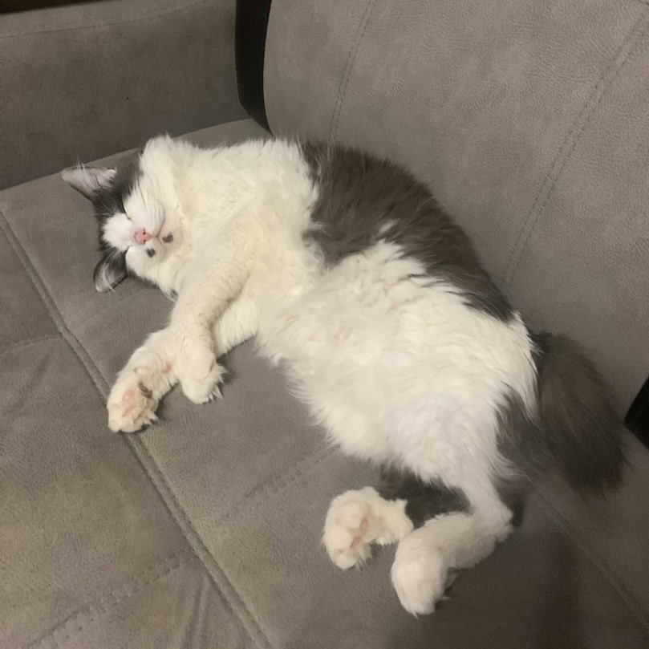
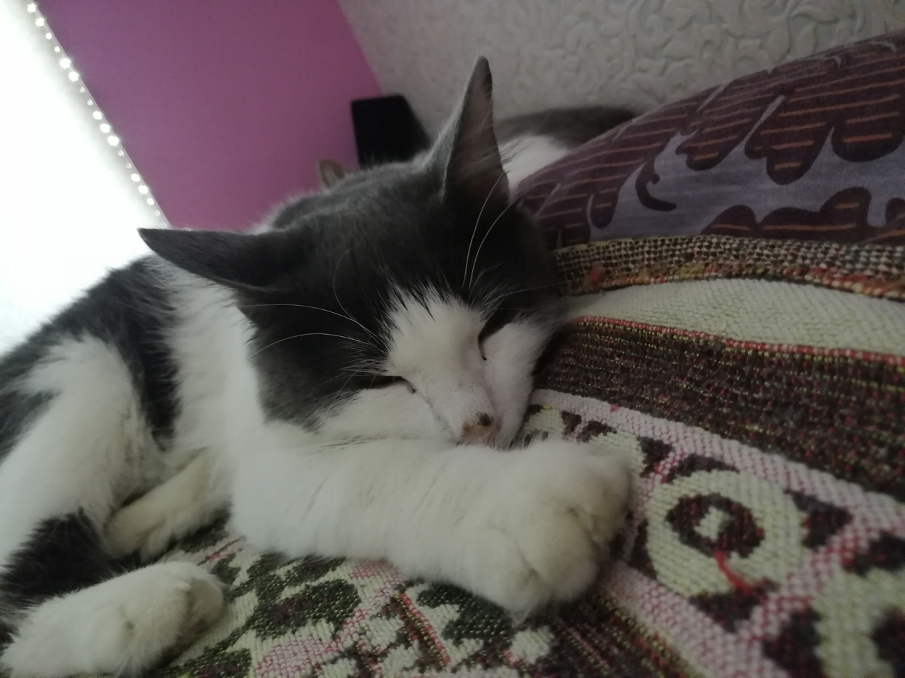

Макс очень ласковый и добрый кот. Любит спать вместе со мной, но не просто рядом, а лезет почти на голову, к подушке, полежит с минутку и ищет новое положение для сна. Вообще, он очень любит спать, выспится за день, а ночью бесится с Ксюшкой.
Еще он очень любит есть и в больших количествах. Даже если его недавно кормили, он все равно будет мяукать и просить еще. Его планы на каждый день - это поваляться , пойти покушать, попить, сходить в туалет, и так по кругу. Только каждую ночь и иногда днем он играет с Ксюшкой. А так, он очень ленивый котик. Но с ним не скучно, потому что она как плюшевый мишка-очень большой, пушистый, и как его положишь, так он и будет лежать, потому что ему лень тратить лишнюю энергию. Иногда кажется что он ее экономит для , того, чтобы дойти до миски и лотка. Но все равно он очень классный. Вот такой вот прикольный кот живет со мной.
